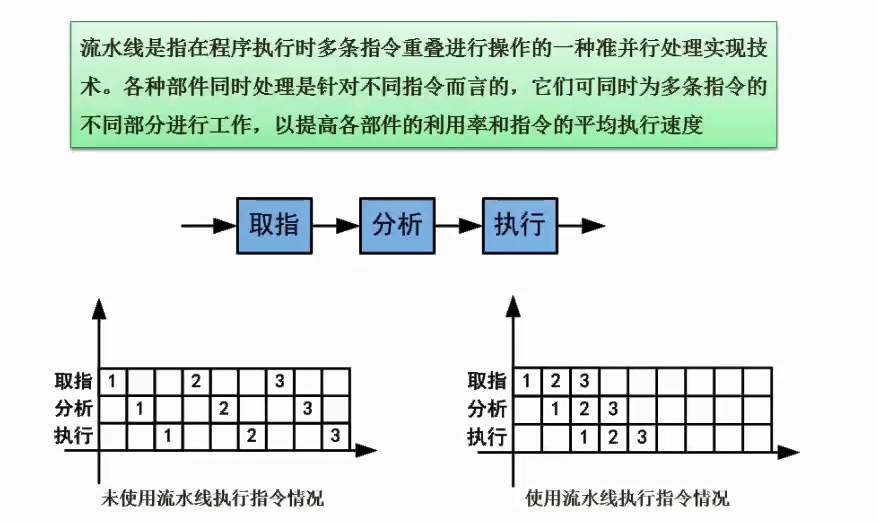

介绍
第一章 简介
1.01 软件设计师考试介绍
2.01 计算机组成与体系结构前言
2.01 计算机组成与体系结构前言
2.02 数据的表示(进制的转换)
2.03 数据的表示(原码反码补码移码)
2.04 数据的表示(浮点数运算)
2.05 CPU结构（运算器与控制器的组成）
2.06 Flynn分类法简介
2.07 CISC和RISC
2.08 流水线的基本概念
2.09 流水线周期及流水线执行时间计算
2.10 流水线吞吐率计算
2.11 流水线加速比计算
2.12 计算机层次化存储结构
2.13 Cache的基本概念
2.14 时间局部性与空间局部性
2.15 随机存储器与只读存储器
2.16 磁盘工作原理
2.17 计算机总线
Published with GitBook
2.08 流水线的基本概念
2.08 流水线的基本概念

坐标系说明
纵坐标是多条指令
横坐标是单元时间
数字代表一组指令
下面我们都假设
取指，分析，指令
耗时都是n
未使用流水线的特点（左图）
完成一组指令，花费了3n时间。完成三组指令，花费了9n时间。
可以看到在开始【1-指令】的时候，【2-取指】完全在等待。
空格都是空闲状态，代表纵坐标这个指令在这时候没活干
使用流水线的特点（右图）
完成三组指令，只花费了5n时间。
在开始【1-指令】的时候，【2-取指】同步在进行。
效率很高
results matching "
"
No results matching "
"